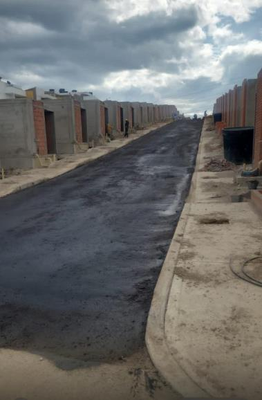
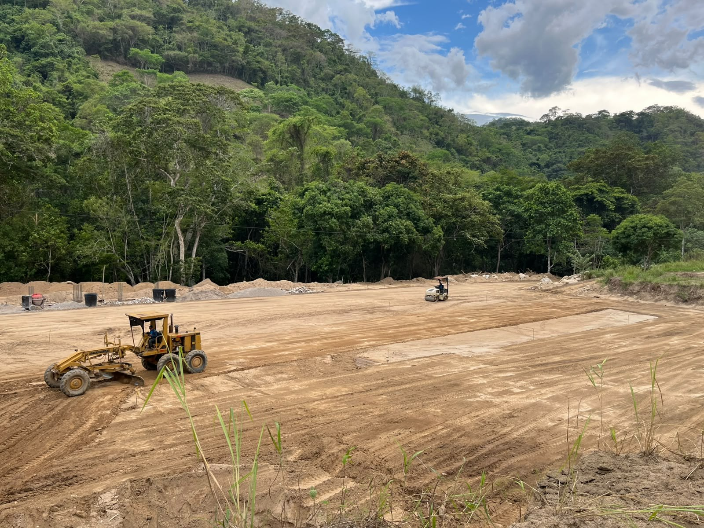
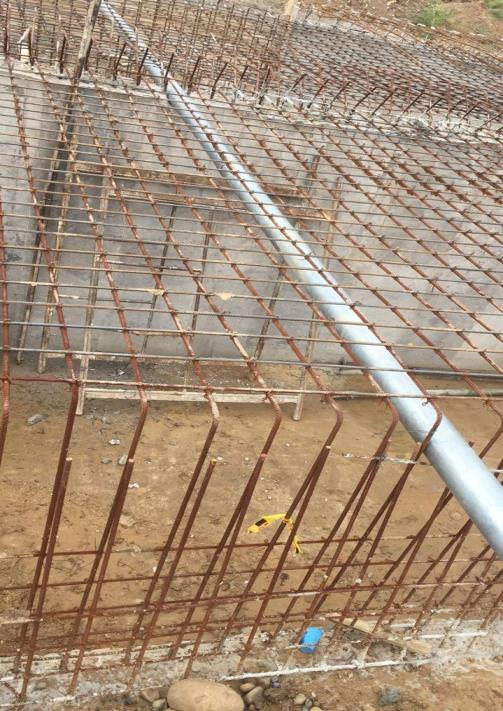
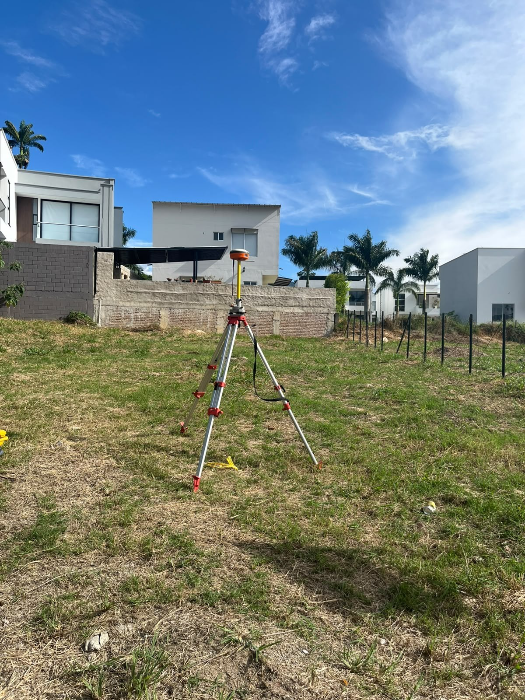
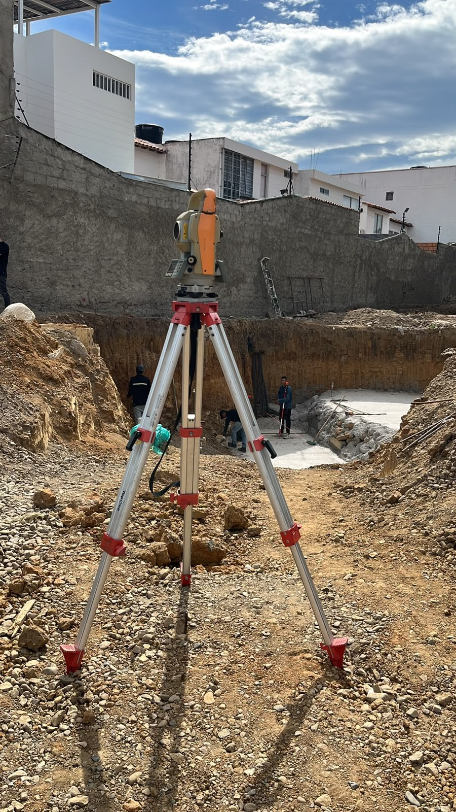

Un servicio para cada etapa de la obra
Desde el levantamiento topográfico inicial hasta el cierre documentado del proyecto: seis frentes de trabajo integrados, para entidades territoriales, constructoras y clientes privados.
Seis frentes, un mismo equipo
Del levantamiento inicial al cierre documentado: las seis líneas de servicio, con su detalle técnico y registro fotográfico, en un solo recorrido.
Construcción de obra civil
Proyectos de construcción completos, de la cimentación a la entrega, con mano de obra calificada y supervisión técnica permanente en cada visita a terreno.
- Viviendas unifamiliares y multifamiliares
- Edificios comerciales e industriales
- Infraestructura urbana: calles, andenes y parques
- Proyectos integrales de construcción y servicios en general


Movimiento de tierras y cimentación
Preparamos y estabilizamos el terreno, y construimos la estructura que soporta cada proyecto, en concreto o en acero, antes de que empiece a levantarse cualquier muro.
- Excavaciones y nivelación de terrenos
- Relleno y compactación
- Cimentaciones y estructuras de concreto o metálicas
- Muros de contención y cubiertas


Obra blanca y acabados
Cerramos cada proyecto con los acabados que se ven y se usan todos los días: lo que distingue una obra entregada de una obra bien entregada.
- Revestimientos, pintura, pisos y cielos rasos
- Carpintería y cerrajería
- Instalaciones eléctricas e hidráulicas
- Entrega con listado de acabados verificado
"Ejecutamos cada proyecto con los más altos estándares de calidad y precisión."
Calidad — GJL Construcciones S.A.S.
Topografía y geotecnia
La base de todo proyecto: medimos el terreno con precisión antes de construir, y damos apoyo topográfico durante toda la obra, no solo al inicio.
- Levantamientos topográficos con estación total y GNSS-RTK
- Estudios de suelos y mecánica de suelos
- Apoyo topográfico para control de niveles en obra
- Entrega de planos y modelo del terreno


Ingeniería civil, eléctrica y mecánica
Diseñamos las redes y sistemas que hacen funcionar un proyecto: vías, agua, electricidad y climatización, pensados desde antes de la primera excavación.
- Diseño de vialidades
- Redes de agua potable, alcantarillado y drenaje pluvial
- Instalaciones eléctricas residenciales, comerciales e industriales
- Climatización, ventilación y energías renovables
"Incorporamos nuevas tecnologías y métodos para mejorar continuamente nuestros procesos y resultados."
Innovación — GJL Construcciones S.A.S.
Gestión, supervisión y consultoría
Acompañamos la parte administrativa y técnica del proyecto, para que avance dentro de presupuesto, plazo y norma, sin sorpresas de último momento.
- Planificación, programación y gestión de recursos
- Presupuestos analíticos
- Licencias de construcción y aprobaciones municipales
- Estudios de factibilidad, dictámenes e interventoría de obras
"Buscamos la eficiencia y mejora continua en cada etapa del proceso constructivo."
Excelencia operativa — GJL Construcciones S.A.S.
¿No sabe cuál servicio necesita?
Cuéntenos el alcance del proyecto y le recomendamos el paquete de servicios adecuado.